编码 Agent 开始补设计能力
hallmark、impeccable 与 ai-design-skills 都把设计拆成可执行的技能与命令：挑主题、按任务排布页面，再用规则挑出模板痕迹。三者差异在规则数量与命令体系，共同点是减少千篇一律的界面，实际效果取决于项目约束。
hallmarkimpeccableai-design-skills
每天看见开源项目的升温轨迹。两种榜单、项目解读与历史对比，整理成可阅读、可下载的图文。
八大网盘直链提取油猴脚本
基于 JavaScript 的网盘直链获取脚本，改写自网盘直链下载助手，支持百度、阿里、移动、天翼、迅雷、夸克、UC、123 等八家网盘，通常以油猴脚本方式安装，把文件地址交给外部下载工具。
项目创建于 2022 年，这是历史记录中的首次上榜，单日增量仅为观察值。此类脚本依赖网盘页面结构，改版后可能需要跟进维护，值得观察更新频率与安装源选择。
昨日对比待积累 · 创建 1540 天 · AGPL-3.0
查看 hmjz100/LinkSwift ↗给编码 Agent 的反 AI 味设计技能
面向 Claude Code、Codex、Cursor 等编码工具的设计技能：从五十套主题中取材，按页面要完成的任务布局，并在真实浏览器里检查「每段标题上挂小标签」「标题里一个彩色词」等模板痕迹，支持审计与重设计。
它把「看起来像 AI 生成」拆成可检查的清单，分楼层门禁与润色检查，并允许在记录理由后推翻默认规则。规则能否贴合真实业务页面，值得观察。
昨日 +2,244 · 今日 +2,830 · 创建 183 天 · MIT
查看 Nutlope/hallmark ↗本地运行的语音克隆与配音工作台
本地运行的语音工作台，支持声音克隆、声音设计、视频配音、听写、转写与有声书制作，README 称覆盖 646 种语言；提供 macOS、Windows、Linux、Docker 安装包，移动端为预览状态。
项目 2026 年 4 月创建，短期内积累大量关注；从 README 看能力范围广、平台覆盖多，但移动端仍是预览。本地推理对显存和机型有要求，实际效果值得观察。
昨日 +2,297 · 今日 +2,621 · 创建 201 天 · AGPL-3.0
查看 debpalash/VoiceStudio ↗多智能体协作的金融研究框架
多智能体 LLM 金融交易研究框架，用分析师、研究员、交易员等角色分工协作产出决策，附带回测、时点数据校验、多模型供应商支持与 HTML 报告输出，并提供命令行入口。
更新日志显示近几个版本集中在时点数据完整性、回测结算规则与多模型适配上做修补，说明可靠性仍是重点。框架输出只是研究材料，不构成投资建议。
昨日 +1,395 · 今日 +1,735 · 创建 669 天 · Apache-2.0
查看 TauricResearch/TradingAgents ↗一条命令让 Agent 读取全网内容
一条命令让 AI Agent 抓取并搜索 Twitter、Reddit、YouTube、GitHub、Bilibili、小红书等平台的内容，README 称无需 API 费用，输出结构化结果，支持 Python 3.10 以上环境。
它补的是 Agent 访问登录墙后内容的短板，README 列出多个数据采集中间件赞助商，说明部分能力可能依赖第三方服务。平台规则与合规边界值得观察。
昨日对比待积累 · 创建 246 天 · MIT
查看 Panniantong/Agent-Reach ↗面向长期陪伴的个性化辅导项目
香港大学数据智能实验室的终身个性化辅导项目，采用 Python 后端与 Next.js 前端，围绕学习者的长期辅导场景组织对话与资料，README 提供多语言版本与论文链接。
项目 2025 年底创建，本次首次进入记录；从 README 看研究与演示并重，提供在线文档与协作入口。教学效果与学习数据如何处理，值得观察。
昨日对比待积累 · 创建 304 天 · Apache-2.0
查看 HKUDS/DeepTutor ↗多设备接续的开源桌面 Agent
开箱即用的开源 AI Agent 桌面客户端，可把多台电脑与手机连在一起继续同一会话，复用已有模型订阅，并接入 Claude Code、Codex、Pi 等代理内核，支持技能、插件与 MCP。
项目把重点放在多设备接续与已有订阅复用，README 说明远程访问按权限开放、文件仍留在原机器。多设备体验是否顺畅，值得观察。
昨日 +1,296 · 今日 +1,465 · 创建 97 天 · Apache-2.0
查看 makecindy/cindy ↗AI 编码 Agent 的设计命令集
给 AI 编码 Agent 的设计词汇表：一个技能、24 条命令（polish、audit、critique、harden 等）和 62 条确定性检测规则，CLI 与浏览器扩展运行规则时不需要模型或 API Key。
它把设计评审拆成可复用命令，并列出应避免的字体、渐变与嵌套卡片等反模式。规则能否覆盖真实项目仍值得观察，检测阈值也可能需要按团队调整。
昨日 +1,506 · 今日 +1,449 · 创建 346 天 · Apache-2.0
查看 pbakaus/impeccable ↗可逐份安装的 AI 设计技能集
面向 Claude Code、Cursor、Codex、Windsurf 等工具的设计技能合集，每个技能是独立文件夹，按需复制安装；目前提供落地页设计技能，涵盖提问、页面结构、转化文案与视觉系统。
仓库创建不足三个月，技能数量还少，README 说明设计取值集中在文件末尾一节，便于按团队口味改写。后续技能扩充与各工具规则格式的兼容性值得观察。
昨日对比待积累 · 创建 91 天 · MIT
查看 elayadesign/ai-design-skills ↗JetBrains 孵化中的 Agentic IDE
JetBrains 孵化中的 Agentic IDE，围绕 pi 编码 Agent 构建：用 git worktree 隔离并行工作区，配 Monaco 编辑器、文件树、终端、规格文档，并显示分支与 PR 检查状态。
把 Agent 会话、工作区与 PR 流程放进同一界面，是它与纯命令行代理的主要区别；README 提到扩展能力仍在计划中。多工作区并行时的合并成本值得观察。
昨日 +1,173 · 今日 +1,204 · 创建 112 天 · Apache-2.0
查看 JetBrains/thinkrail ↗给每个 Agent 独立工作区的桌面台
本地优先的桌面工作区，为 Codex、Claude、Grok、Gemini、Cursor、Cline 等代理分配独立会话与工作区，提供任务队列、文件传输、内嵌浏览器与代理间消息，覆盖 macOS、Windows、Linux。
README 明确标注为开发预览：代理默认拥有完全访问权限且不逐条确认，还提供 Computer Use 能力。使用前需备份数据并限定任务范围，安全边界值得持续观察。
昨日 +176 · 今日 +777 · 创建 76 天 · 许可证未标注
查看 nightly-labs/openbot ↗从元数据生成本体的语义层框架
NVIDIA 的 Python 框架，从企业元数据生成本体与语义目录，跨系统对齐指标定义，为 Agent 提供可校验的查询上下文，并通过 MCP、CLI、API 暴露，配套 Postgres 与向量检索。
项目强调答案要带出处与经认证的定义，针对的是 Agent 分析的可信度问题；README 说明当前不接受外部贡献，部署依赖 NVIDIA NIM 接口。落地成本与自托管选项值得观察。
昨日对比待积累 · 创建 183 天 · Apache-2.0
查看 NVIDIA/auto-ontology ↗可回滚、可复核的本体变更工具
用 Rust 编写的单二进制工具，对生产本体做变更前的影响分析、应用与回滚，并输出审计人员可自行复核的证明；附带浏览器演示，可把一个表格转成本体并标出错误。
它把本体变更当作可验证的工程流程，用 Lean 4 检查器一类手段给出可复核结果，适合对语义模型治理有要求的团队。演示之外的规模表现值得观察。
昨日对比待积累 · 创建 233 天 · MIT
查看 fabio-rovai/open-ontologies ↗跨模型的系统提示与人格配置集
收集 31 份系统提示、人格设定、工作区策略与 AGENTS.md 配置，覆盖 Claude、Gemini、Grok、GLM、DeepSeek、Kimi 等模型及部分本地 Modelfile，每份力求可直接粘贴使用。
README 定位为研究用途，也提到可用于研究提示注入与指令层级的影响；这类内容涉及平台条款，使用前应确认合规。集合的维护与内容失效速度值得观察。
昨日对比待积累 · 创建 131 天 · 许可证未标注
查看 togg53192-cmd/jailbreaks ↗DeepSeek Harness 红队插件
针对 DeepSeek Harness 的红队插件，通过面板切换提示词与宿主策略，区分宿主层拦截与模型拒答；README 限定只允许本地实验网段访问，并要求二次开发时署名来源。
作者在 README 中说明了被转售后的限制调整，包括关闭公网访问与移除技能库，这类边界变化会影响可用范围。项目与 DSH 具体发布版本强绑定，兼容节奏值得观察。
昨日对比待积累 · 创建 70 天 · Apache-2.0
查看 YuJunZhiXue/dsh-purge ↗用强化学习策略行走的小鸭子机器人
Pollen Robotics 的小型双足鸭子机器人仓库，约 25 厘米、800 克，在 RK3566 上以 50Hz 控制环驱动 15 个舵机，运行强化学习策略，支持行走、翻滚、捡拾与跌倒后起身。
仓库放的是机器人本体软件，训练流程在同组织的 microduck_rl，用 MuJoCo 与 PPO 再导出 ONNX。更新带签名校验和回滚机制，硬件到手后的可玩性值得观察。
昨日对比待积累 · 创建 91 天 · Apache-2.0
查看 pollen-robotics/microduck ↗Rust 与 GPUI 写的轻量数据库客户端
用 Rust 与 GPUI 编写的跨平台数据库客户端，不走 Electron 或 JVM，支持 Postgres、MySQL、SQLite、DuckDB、ClickHouse、Redis 等多种引擎，强调启动快与大表滚动流畅。
README 说明处于早期阶段但列出的功能已可用，并承诺功能不设付费墙；macOS 包未公证需手动去除隔离属性。多引擎支持的深度与稳定性值得观察。
昨日对比待积累 · 创建 72 天 · GPL-3.0
查看 ShayanAbbas1/dbdelve ↗安装前扫描 Agent 技能的安全工具
NVIDIA 的 Agent 技能安全扫描器，支持扫描仓库、压缩包、目录或单文件，内置 71 条漏洞模式覆盖提示注入、数据外泄与供应链风险，输出终端、JSON、Markdown 与 SARIF 报告。
README 引用研究数据称所分析的技能中约四分之一含漏洞，据此强调安装前扫描；工具提供基线抑制以减少重复告警。检测准确率与误报率仍值得观察。
昨日对比待积累 · 创建 221 天 · Apache-2.0
查看 NVIDIA/SkillSpector ↗显示 Agent 真实状态的桌面小鱼
DeepSeek Harness 的桌面伴侣插件，用透明置顶的原生窗口显示 Agent 的思考、修改、执行与完成等真实状态，可展示 DeepSeek 余额，支持拖动与摸头互动以及大小、气泡设置。
状态来自会话事件而非读屏，README 也说明推理强度与进度只显示上游实际提供的信息。插件与 DSH 版本、以及 WebUI 和桌面端两套配置的配合值得观察。
昨日对比待积累 · 创建 75 天 · MIT
查看 QCYTSN/dsh-dafeiyu ↗会中提示、会后总结的会议助手
桌面会议助手，本地录音并按你与对方双通道实时转写，会中给出提示、提问建议与语速、发言占比等指标，会后生成摘要与行动项，可通过 webhook 推送到自动化平台。
README 显示 macOS 有一键安装，Windows 需自行构建且暂无托管安装包，Linux 不支持录音；需要麦克风与录屏权限，并依赖 VideoDB 服务。隐私与合规细节值得观察。
昨日对比待积累 · 创建 245 天 · 许可证未标注
查看 video-db/call.md ↗hallmark、impeccable 与 ai-design-skills 都把设计拆成可执行的技能与命令：挑主题、按任务排布页面，再用规则挑出模板痕迹。三者差异在规则数量与命令体系，共同点是减少千篇一律的界面，实际效果取决于项目约束。
cindy 强调多设备接续与订阅复用，thinkrail 用 git worktree 隔离并行会话，openbot 给每个代理独立工作区和队列，VoiceStudio 把语音做成本地桌面应用。共同方向是回到本机运行，代价是权限与资源管理更复杂。
Agent-Reach 打通社交与视频平台，auto-ontology 和 open-ontologies 把数据含义与本体变更做成可校验的语义层，SkillSpector 在安装前扫描技能风险。能力扩张的同时，定义一致性、权限与来源可信度需要一起解决。
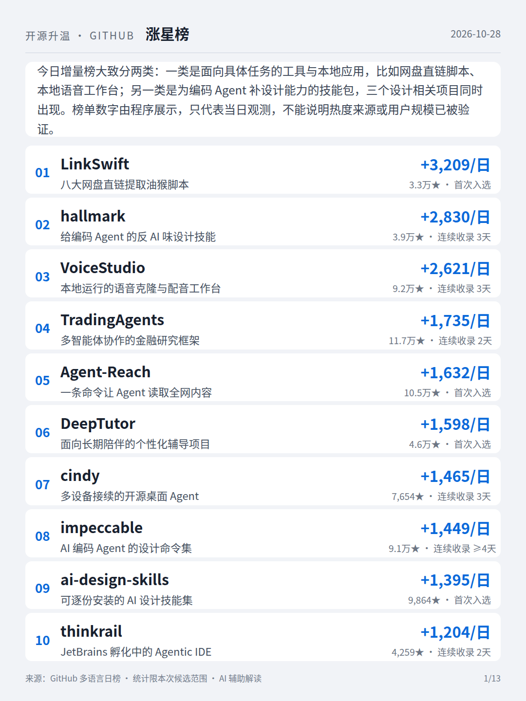
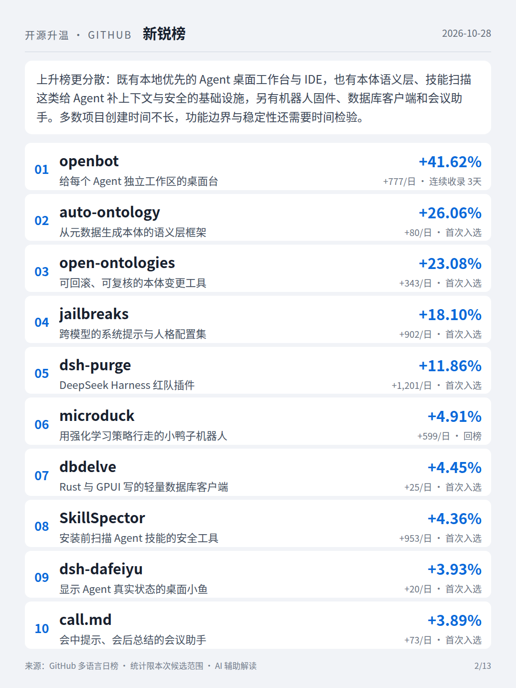
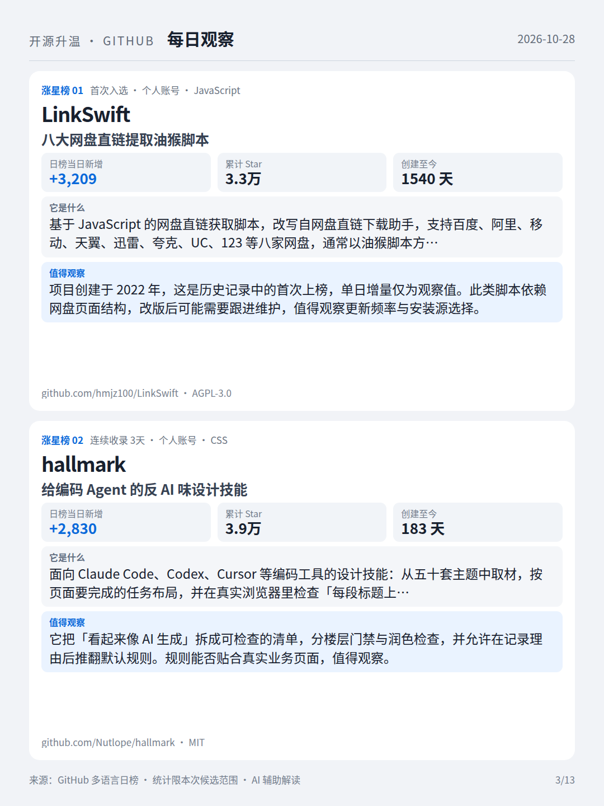
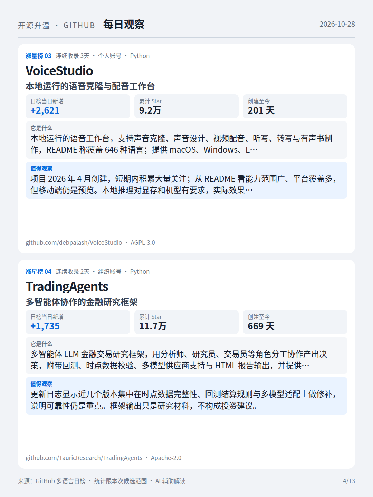
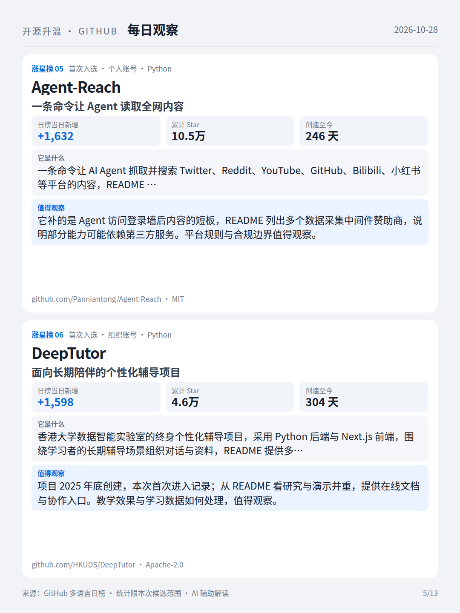
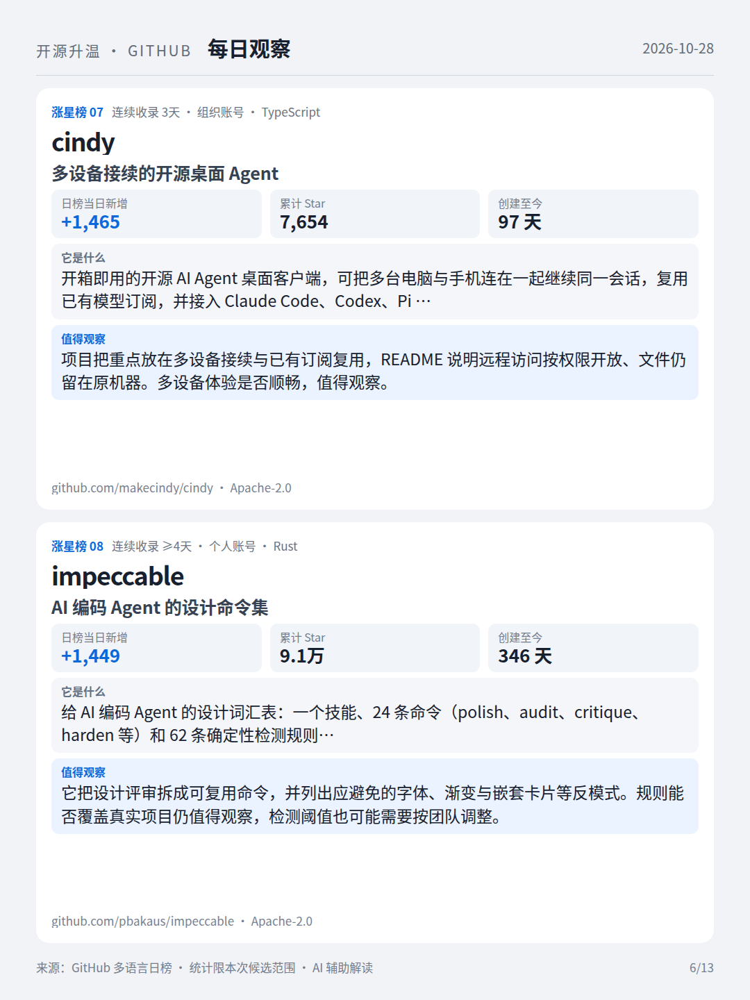
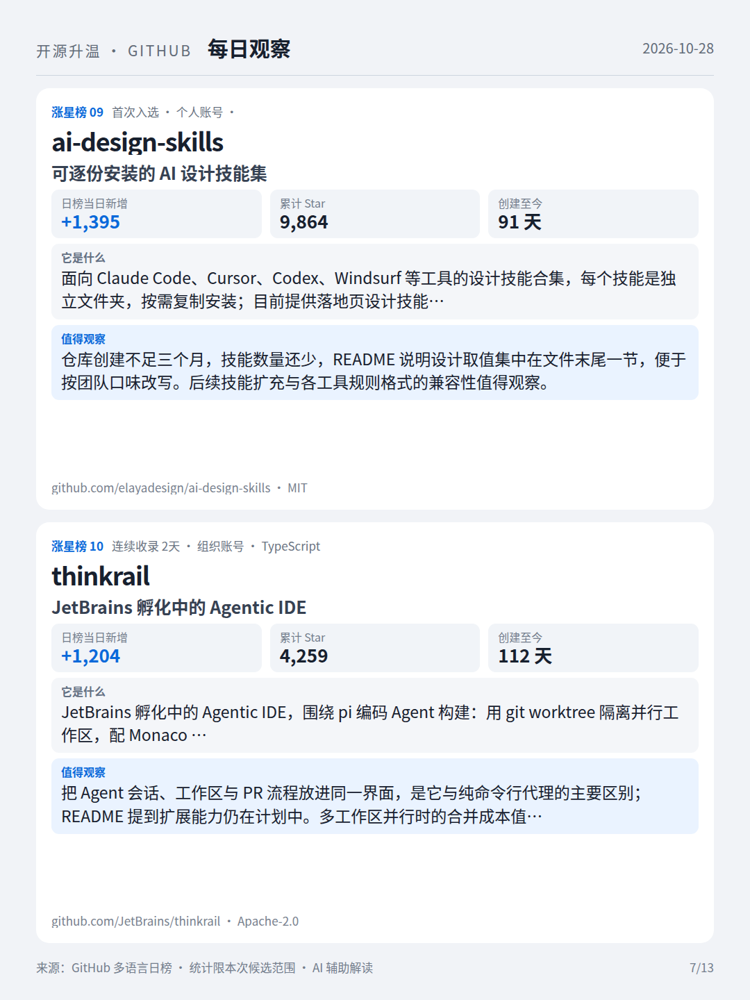
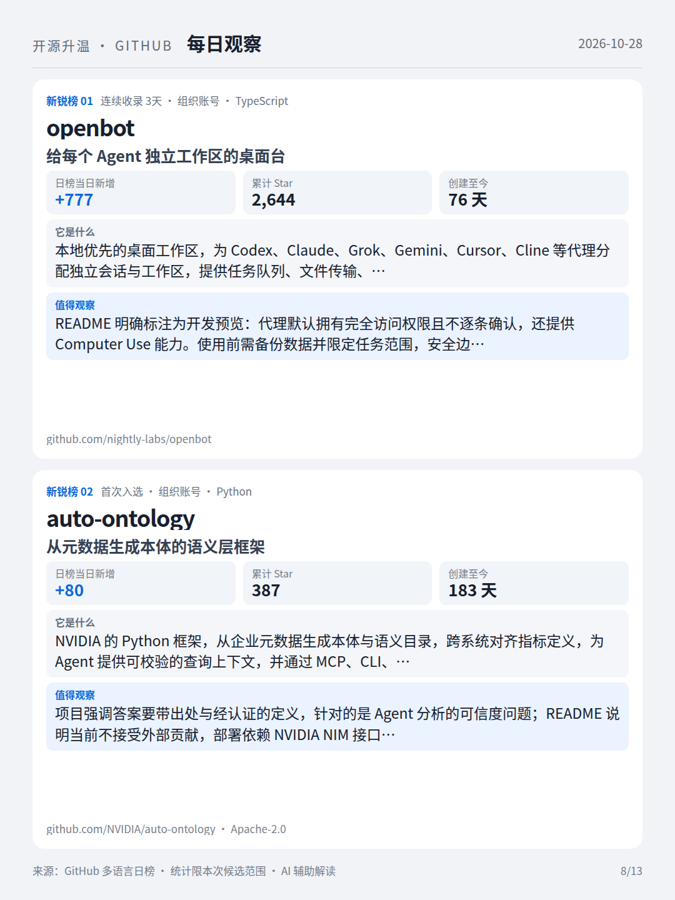
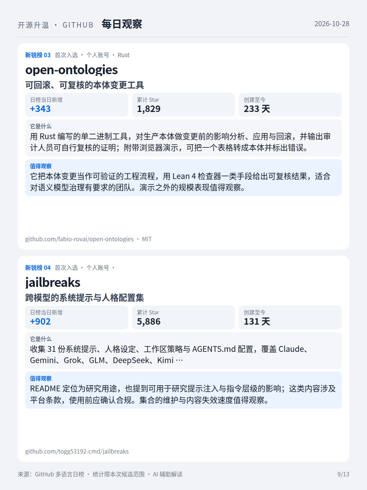
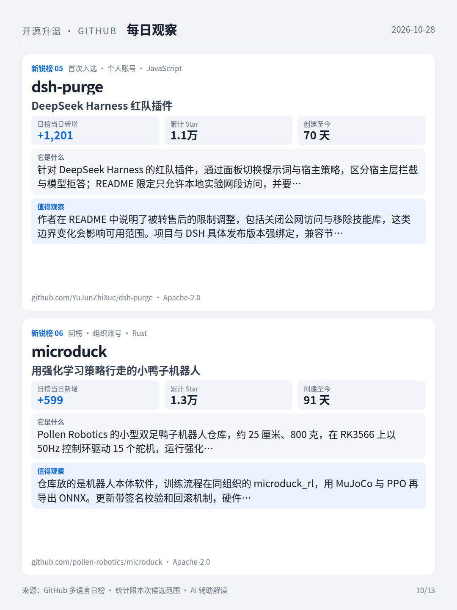
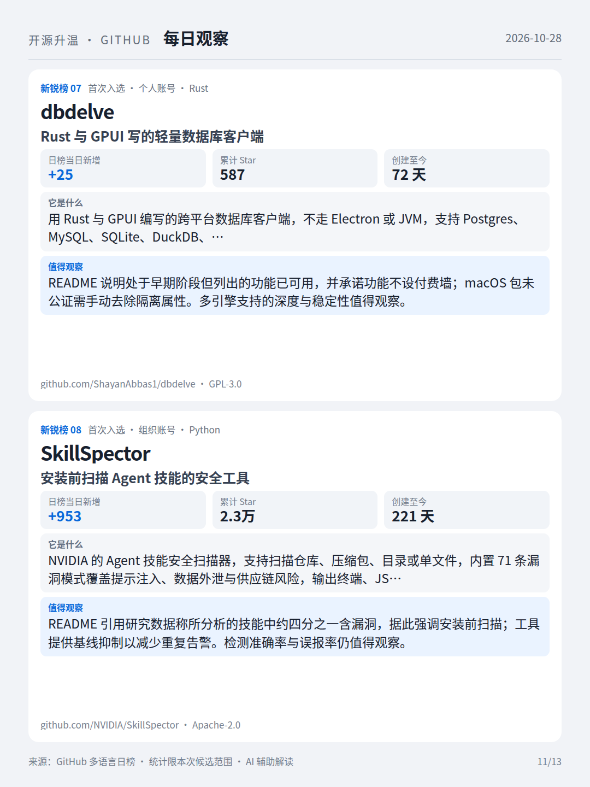
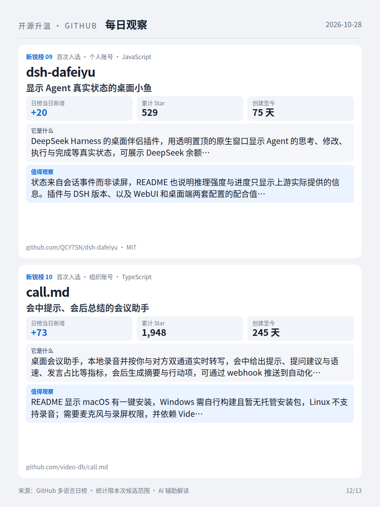
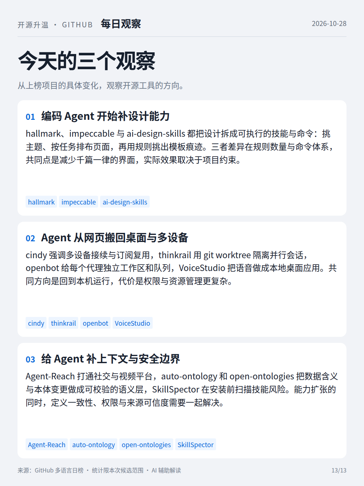